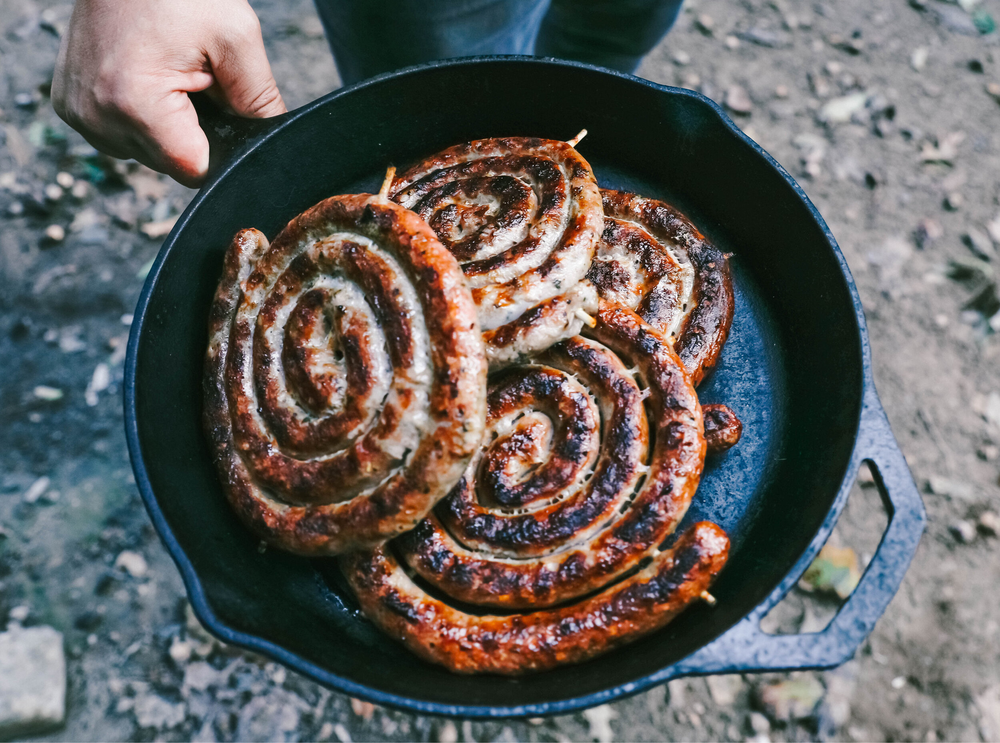

Some simple fried wors
Ingredients
- Raw Boerewors
- 1tbsp Olive oil
- Rosemary
- BBQ spice
Steps
- Defrost the Wors if frozen
- Add bbq spice and rosemary to wors
- Cut the roll into pieces that can fit on the pan
- Optional: Prick the sausage with a fork to make it less juicy if its your preference
- Let it brown then eat